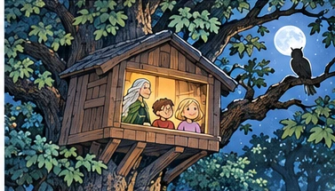
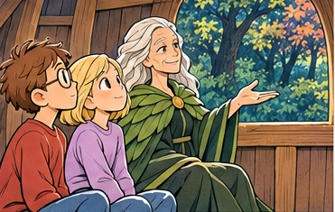
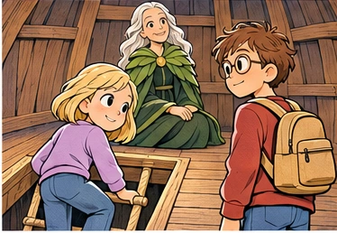
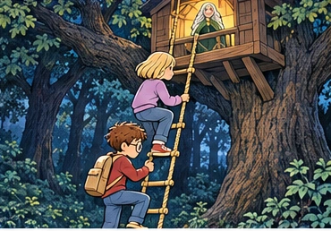
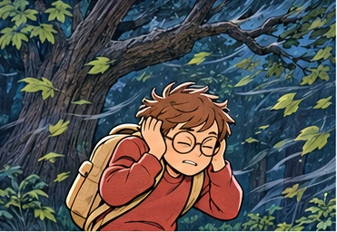

Chapter 10 · Part 1 — Earth Life
The midnight woods woke up.
A breeze rustled the leaves.
An owl hooted.

The sounds were soft, but very alive.
Jack opened his eyes. He pushed his glasses into place.

He smiled. Morgan was still with them. He could see her in the moonlight. Her long white hair was shining.

“Morgan, can you and the tree house stay here?” said Annie. “In Frog Creek?”

“No, I must leave again, I’m afraid,” said Morgan. “I’ve been gone from Camelot for a long time.”
She handed Jack his pack. She brushed his cheek. Her hand felt soft and cool.

“A bit of moondust still on you,” she said. “Thank you, Jack, for your great love of knowledge.”
“You’re welcome,” said Jack.

Morgan tugged on one of Annie’s braids. “And thank you, Annie, for your belief in the impossible.”
“You’re welcome,” said Annie.

“Go home now,” said Morgan.
Jack smiled. Home was Earth—that bright, colorful world where everything was alive and always changing.

“Bye, Morgan,” said Annie. She started out of the tree house.
Jack looked back at Morgan.

“Will you come back soon?” he said.
“Anything can happen,” said Morgan. “The universe is filled with wonders. Isn’t it, Jack?”

He smiled and nodded.
“Go now,” Morgan said softly.
Jack followed Annie down the rope ladder. He stepped onto the ground.

The wind started to blow.
The tree started to shake.
A loud roar filled Jack’s ears. He squeezed his eyes shut. He covered his ears.

Then everything was silent and still.
Jack opened his eyes. The ladder was gone. He looked through the leaves and branches of the giant oak tree. Where the tree house had been was only moonlight now.
“Bye, Morgan,” he whispered sadly.
“Bye, Peanut,” said Annie.
Jack and Annie stared at the top of the tree for a long moment.
“Ready?” said Annie.
Jack nodded.
They started for home.
The midnight air felt cool and moist. It was filled with the soft sounds of earth life.
Jack and Annie left the Frog Creek woods. They started down their street.
Annie glanced up at the sky. “The moon looks really far away, doesn’t it?”
It did, thought Jack. It was.
“I wonder how the moon man can be up there all alone,” said Annie.
“What do you mean?” said Jack.
“I mean, who helps him put on his spacesuit?” said Annie. “Who helps him get up when he falls down?”
“And who is he?” added Jack.
“Who do you think he was?” said Annie.
“He must be a scientist or an astronaut from Earth,” said Jack.
“No. I think he’s an alien,” said Annie, “from another galaxy.”
Jack scoffed. “What makes you say that?”
“I just feel it,” said Annie.
“Wrong,” said Jack. “There’s no proof that aliens exist.”
“Maybe not now,” said Annie. “But don’t forget—we were in the future.”
“Oh, brother,” said Jack.
They crossed their yard and climbed their back steps. Annie tiptoed inside the house. Jack followed her.
Before he shut the door, he glanced up at the moon.
Was Annie right? he wondered. Could the moon man have come from another galaxy?
Morgan’s words came back to him: The universe is filled with wonders. Isn’t it, Jack?
“Goodnight, moon man,” Jack whispered. Then he closed the door.